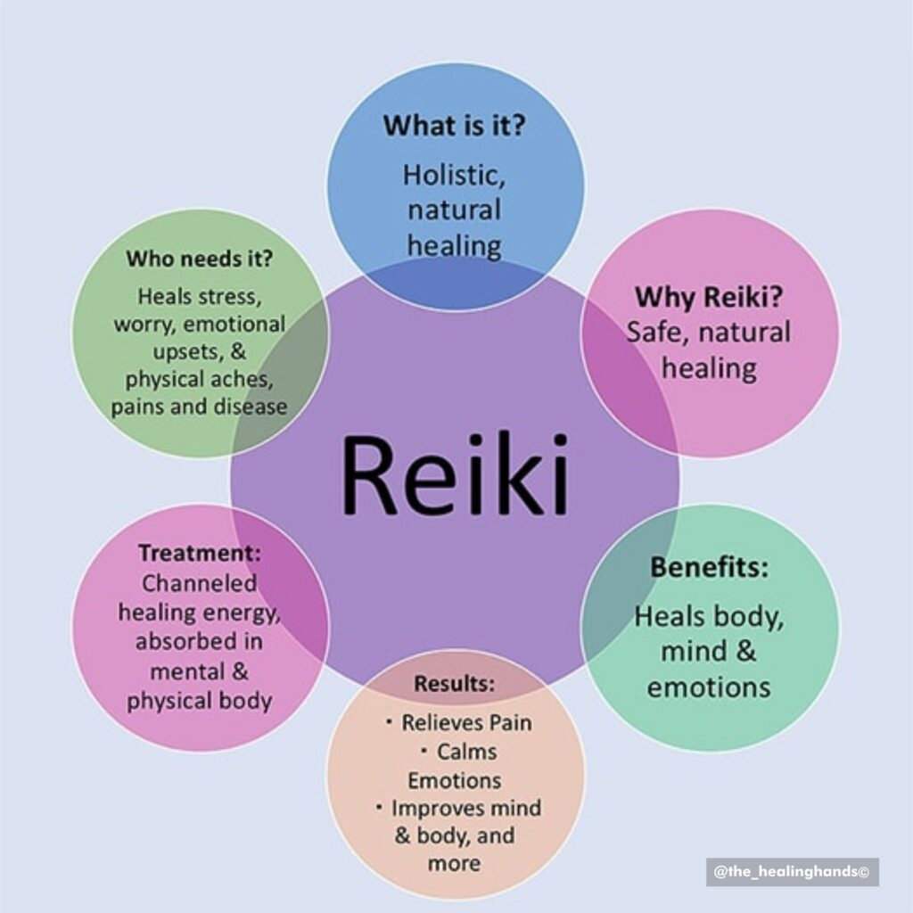
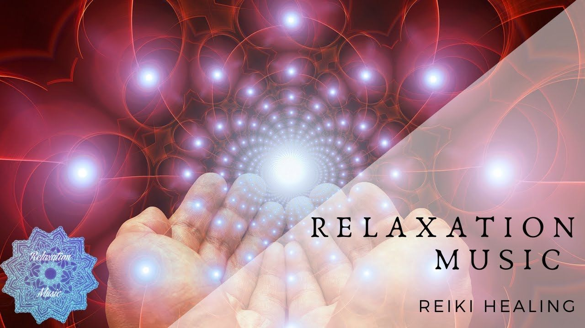

Personalized Reiki for Holistic Wellness
At Naturally Elevated, Reiki healing forms a cornerstone of our holistic approach to personal coaching. Kathryn Newton, a certified Reiki Master, uses gentle, restorative energy practices to harmonize your body, mind, and spirit. Reiki effectively alleviates stress, promotes emotional balance, and enhances overall health and well-being. In online Reiki sessions, Kathryn channels soothing energy, helping clients achieve deep relaxation and inner peace. This calming energy can facilitate healing, emotional clarity, and heightened intuitive awareness. Experience the profound benefits of Reiki from the comfort of your own space.
Personalized Care
: Each Reiki session is thoughtfully customized to the client's unique needs.Comfort and Convenience
: Relax and experience healing in a nurturing online environment from home.Holistic Benefits
: Reiki promotes improved sleep, reduced anxiety, increased energy, and emotional resilience.-
Supportive Coaching
: Kathryn’s compassionate approach ensures clients feel empowered, balanced, and deeply supported.
Awaken Your Inner Peace with Reiki
Reiki sessions at Naturally Elevated are deeply personalized and tailored to each client's unique needs. Kathryn creates a nurturing online environment, allowing clients to relax and fully open themselves to Reiki's transformative power. Regular Reiki sessions promote improved sleep, increased energy, reduced anxiety, and emotional resilience. Kathryn's compassionate approach ensures clients feel supported, empowered, and balanced after each session. This powerful healing modality complements other coaching techniques, enhancing overall personal growth. Schedule your online Reiki session today and begin your journey toward holistic healing and balance.
Reiki Music
Reiki music greatly enhances a Reiki session by creating an atmosphere conducive to deep relaxation and emotional healing. Soft, soothing melodies help clients transition from a state of stress and mental activity into calmness and tranquility. This peaceful environment supports deeper energy work by opening the recipient to the gentle flow of Reiki energy. The carefully chosen frequencies in Reiki music encourage the body to naturally relax, reducing resistance and allowing the Reiki energy to work more effectively. Additionally, Reiki music aids the practitioner by promoting focused intention, clarity, and enhanced sensitivity to energy flows during the session. It subtly aligns the energies of both practitioner and recipient, facilitating a harmonious healing experience. This synergy helps clients reach profound states of relaxation, mindfulness, and emotional release. By fostering a calm, safe, and nurturing atmosphere, Reiki music amplifies the effectiveness of each session, enhancing overall therapeutic outcomes and leaving clients feeling renewed and balanced.